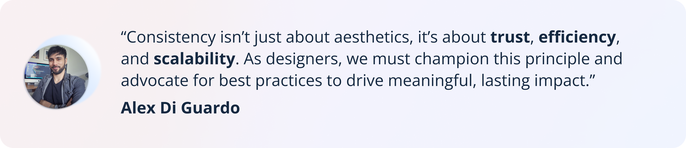

üíº MoneySuperMarket
üï∞Ô∏è 2024
üßëü誂Äçüé® Product Designer
The struggle is real:
Without a Design System, our product suffered from inconsistencies that caused developer inefficiencies and a jarring experience.
Vision:
I believe Design Systems are more than components, they're essential for a smooth collaboration between designers and developers.
My vision is to create a system that not only streamline workflows but also ensure users enjoy a cohesive experience, building trust and satisfaction.
My approach:
Instead of creating components randomly, I conducted an end-to-end audit to identify problematic patterns.
This revealed that modals were extensively used across user journeys but varied significantly in style.
My goal was to standardise anatomy and rules for modal-based experiences.
Outcome:
⬇️ Modals were reduced to 3 variants compared to the 20 different ones
⏳ 20% of time saved thanks to more standardised dev hand-offs

To gain buy-in for a new system across the business, I needed to present compelling evidence of its benefits.
I leveraged design sprints, a structured, five-day process, to explore solutions quickly and validate ideas effectively.
An audit revealed the extensive use of modals across core user journeys. Their inconsistent design and behaviour created a disjointed and jarring experience.

Modals were reduced to 3 variants compared to the 20 different ones flying around and were restricted to specific uses cases.
Some participants encountered difficulty dismissing the final modal due to decorative elements being positioned too close to the close button, causing a delay in interaction.
The issue was addressed by replacing the static confetti with a Lottie animation. While the interaction time remained the same, this change eliminated the confusion around dismissing the modal and added a delightful, engaging touch.
During the A/B test we also noticed an increase of 'club members' thanks to a more streamlined modal-based onboarding process:

Consistency isn't just about aesthetics, it's about trust, efficiency, and scalability. As Designers, we must champion this principle and advocate for best practices to drive meaningful, lasting impact.